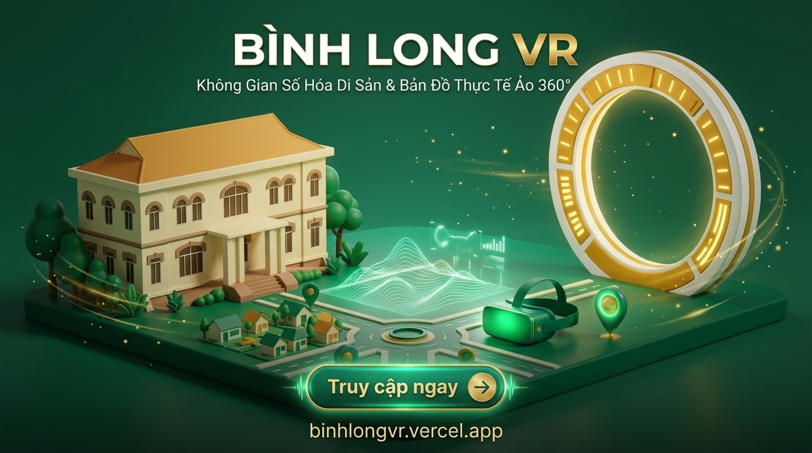

1 Thông Tin Nhận Diện & Truy Cập Hệ Thống
2 Chi Tiết 4 Cụm Di Tích Lịch Sử Được Số Hóa Toàn Diện
Dinh Tỉnh Trưởng Bình Long
Công trình kiến trúc Pháp 2 tầng kiên cố, trung tâm chỉ huy quân sự lịch sử trong chiến dịch giải phóng Bình Long năm 1972. Hệ thống số hóa bao gồm 4 góc nhìn VR toàn cảnh: mặt tiền chính, sảnh khánh tiết, khuôn viên chứng tích và đường hầm ngầm kiên cố.
Khu Di Tích Mộ 3.000 Người
Địa chỉ đỏ lịch sử ghi dấu nơi an nghỉ tập thể của hơn 3.000 đồng bào và chiến sĩ tử nạn trong trận đánh ác liệt năm 1972. Tích hợp không gian tưởng niệm trang nghiêm, văn bia lịch sử, khu hoa viên và giọng đọc thuyết minh âm thanh xúc động.
Khu Di Tích Mộ 7 Người
Nơi ghi nhớ sự hy sinh oanh liệt của 7 chiến sĩ anh dũng thuộc đơn vị vũ trang cách mạng địa phương kiên cường giữ chốt bảo vệ căn cứ. Số hóa chi tiết bia tưởng niệm, khuôn viên cây xanh và tư liệu ảnh lịch sử thời kỳ kháng chiến.
Chùa Phật Quốc Vạn Thành
Điểm nhấn du lịch văn hóa tâm linh nổi tiếng của thị xã Bình Long với đại tượng Đức Phật Thích Ca Mâu Ni ngồi thiền cao 73m lớn nhất Đông Nam Á. Số hóa góc nhìn trên cao toàn cảnh thị xã và chi tiết quần thể chánh điện thanh tịnh.
3 Quy Trình Vận Hành & Khai Thác 5 Bước (Trực Quan)



4 Tiêu Chuẩn Kỹ Thuật Lắp Đặt Bảng Mã QR Thực Địa
Chất Liệu Bảng Hiển Thị Ngoài Trời
Sử dụng Mica Đài Loan trong suốt dày 5mm hoặc Inox 304 ăn mòn in UV phủ bóng bảo vệ. Đảm bảo chống chịu nắng mưa, không ố vàng hoặc bạc màu dưới điều kiện thời tiết ngoài trời.
Kích Thước Bảng Hiển Thị Chuẩn
Bảng chỉ dẫn đặt tại cổng chính hoặc lối vào di tích: kích thước khuyến nghị 200 × 200 mm. Bảng phụ đặt tại chân bia hoặc các góc giới thiệu: kích thước 100 × 100 mm.
Vị Trí & Góc Nghiêng Khuyến Nghị
Lắp đặt ở độ cao từ 1.2m đến 1.4m so với mặt đất (vừa tầm mắt người trưởng thành và trẻ em). Độ nghiêng bảng từ 15 đến 20 độ để tránh ánh nắng phản chiếu gây chói ống kính máy ảnh.
5 Danh Mục Hạng Mục Nghiệm Thu Bàn Giao
| STT | Hạng Mục Bàn Giao | Mô Tả & Trạng Thái Kỹ Thuật | Đánh Giá |
|---|---|---|---|
| 01 | Hệ thống Web App Bản Đồ Số | Giao diện chuẩn responsive, tương thích mượt mà trên điện thoại và máy tính. | ĐẠT CHUẨN |
| 02 | Dữ liệu VR 360° 4 Cụm Di Tích | Dinh Tỉnh Trưởng, Mộ 3.000 người, Mộ 7 người, Phật Quốc Vạn Thành. | ĐẠT CHUẨN |
| 03 | Thuyết Minh Âm Thanh & AI Hỏi Đáp | Audio thuyết minh chuẩn và Trợ lý AI tra cứu sự kiện lịch sử tự động. | ĐẠT CHUẨN |
| 04 | Bộ Mã QR Bản Đồ Số | Bộ mã QR định dạng chuẩn in ấn và trong suốt, đã kiểm tra quét thực tế 100%. | ĐẠT CHUẨN |
| 05 | Bộ Poster Tiếp Thị Có Chibi Hướng Dẫn | Poster tiếp thị 16:9 và Standee 9:16 có mã QR và nhân vật chibi hướng dẫn tham quan. | ĐẠT CHUẨN |
| 06 | Tài Liệu Hướng Dẫn Vận Hành | Bộ tài liệu chi tiết quy trình vận hành và đầu mối hỗ trợ kỹ thuật trực tiếp (KS. Trần Công Toản: 0769394157 - tctoan1024@gmail.com). | ĐẠT CHUẨN |